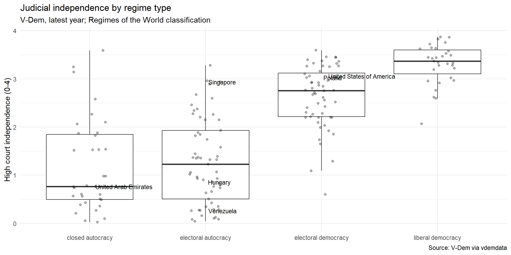
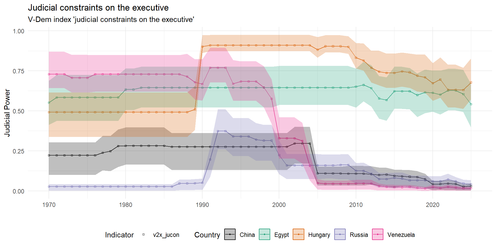

Courts in Authoritarian Regimes
Week 10
Assessment
before starting writing, make sure to:
read the Assessment page on the website extremely carefully
read the FAQ page on the website
consult the lecture slides on the research paper
Assessment: write clearly
What was the hypothesis in this paper?
South Africa is a noteworthy example of a country who created a constitutional court in order to successfully transition into democratization. This decision came at the cost of changing the jurisdictional scope and hierarchical standing of the Appellate division, now known as the Supreme Court of Appeal (SCA). This shift in the SCA’s jurisdictional scope and hierarchical standing allowed the Constitutional Court of South Africa (CC) to form a constitutional precedent, which I hypothesize increased the CC’s effectiveness and consequently contributed to South Africa’s successful transition into a democratic regime.
Courts without democracy
most theories of courts assume a liberal democracy: elected politicians, an independent judiciary, a public that can punish
most of the world’s courts operate without at least one of those
this week: why autocrats build courts, what those courts do and when they turn on their makers
and what this says about a literature written mostly about the US and Europe
Why autocrats build courts
What are courts for in an autocracy?
| function | what the ruler gets | examples |
|---|---|---|
| social control | dissent handled as law, not repression | Singapore’s defamation suits |
| legitimation | power dressed as legality | post-Soviet constitutional courts |
| administrative discipline | courts watch local officials | China’s administrative litigation (Cao, Liu, and Zhou 2023) |
| credible commitment | investors trust property rights | Egypt (Moustafa 2003) |
| blame-shifting | judges take the blame | privatization, family law, religion |
| repressing rivals | trials discipline insiders | Shen-Bayh (2018) |
- each function needs a court that is somewhat believable (Ginsburg and Moustafa 2008; Moustafa 2014)
Insurance theory of court power
empowering courts comes at a cost to executives and legislators
courts are more stable than governments – empowering courts can insure incumbents against loss of power (Finkel 2005)
powerful courts can make it harder to change policy direction
they can also help protect former leaders and their assets
1994 judicial reform in Mexico
after winning elections in 1994 president Ernesto Zedillo decided to make the Mexican judiciary more independent and powerful – why?
Finkel (2005) explains this counterintuitive move as a form of insurance policy
the ruling Institutional Revolutionary Party was losing support and anticipated loss of power
the reform gave the Mexican Supreme Court more power to circumscribe (federal and state) government policy
1994 judicial reform in Mexico
Ernesto Zedillo during his presidency
Independence by regime type

Judicial power in autocracies over time

The dual state
The dual state
Fraenkel, writing from inside Nazi Germany, described two states in one (Fraenkel 2017)
the normative state: ordinary law applied by ordinary courts to contracts, crimes and property
the prerogative state: power acting without legal limits whenever it decides a matter is political
the boundary between the two is drawn by the regime, case by case, and the normative state keeps working precisely because the prerogative state exists
the concept travels: Francoist Spain, Russia (Hendley 2022), China’s environmental litigation that works until a state enterprise is the defendant (Stern 2013), Singapore’s meticulous legality in the service of one-party rule (Rajah 2012)
for the study of courts it means that country-level independence scores average over two very different things
Judicial independence in Francoist Spain
Toharia (1975) documents that in the authoritarian Spain of the 1970s, judges held diverse opinions different from the regime
ordinary judges were by and large insulated from threat of removal or punishment by the government
however, the regime interfered with independence in politically sensitive cases by creating and staffing a host of special tribunals
Judicial independence in Francoist Spain
General Franco ruled Spain until 1975
Legal dualism
Hendley (2022) argues that the creation of special tribunals for political issues is the exception in authoritarian regimes
instead, the “normative” and “prerogative” states coexist side-by-side, often relying on informal institutions
e.g. the same judge handling ordinary cases can be twisting the law to enable the persecution of dissidents
China
the largest court system in the world, run by a party that has never pretended it stands outside the law it makes
tying the autocrat’s hands: the party built commercial and property law, and courts to apply it, where it needed the cooperation of business elites it could not simply coerce (Wang 2015)
suing the government: administrative litigation lets citizens challenge local officials; transferring such cases outside the local county raised the chance of the local government losing by about 4 percentage points (Cao, Liu, and Zhou 2023)
anti-corruption and court bias: politically connected firms won more often in commercial disputes until the anti-corruption campaign after 2012 weakened the advantage (Zhang 2023)
courts work for the centre against local officials and connected firms, and stop where the centre’s own power begins
Rule by law in Singapore
Singapore has no show trials or special tribunals, and a judiciary ranked among the most efficient in the world
the same courts have bankrupted opposition politicians through defamation suits brought by ministers, upheld detention without trial and enforced the restrictions on assembly and speech (Rajah 2012)
authoritarian rule of law: legality as a source of legitimacy for a regime that never needs to break its own laws, because it writes them
by every procedural measure these courts are independent
When courts bite
When do courts in autocracies bite?
| condition | mechanism | evidence |
|---|---|---|
| audiences | a bar, press or public backs the judges | Pakistan’s lawyers (Ghias 2010; Kureshi 2021) |
| competition | rulers interfere when the opposition might win | Russia, Ukraine (Popova 2010); election fraud (Harvey 2022) |
| fragmentation | divided rulers cannot punish judges | (Helmke and Rosenbluth 2009) |
| elections | electoral disputes give courts cover | Kenya 2017 (Gerzso 2023) |
| international audiences | investors, donors, accession talks | Turkey before 2010 |
| dual state | independence survives in the normative state only | Spain, Russia, China |
Lawyers against the regime
Pakistan 2007: General Musharraf suspended Chief Justice Chaudhry; the bar went on strike, marched and boycotted the courts for two years, and the judges were restored in 2009 once Musharraf had gone (Ghias 2010)
the legal complex, lawyers and judges acting together, has carried political liberalism in more cases than the bench alone (Halliday, Karpik and Feeley 2007)
the same complex can be captured: bar associations packed, licences revoked, lawyers prosecuted, as in Turkey after 2016 and Belarus after 2020
audiences matter because a judge who rules against the regime needs someone to notice
Elections and annulments
courts in competitive authoritarian and hybrid regimes are most exposed when they rule on elections, and that is also when they are most watched
Kenya 2017: the Supreme Court annulled the presidential election for irregularities, the first such annulment in Africa; the opposition boycotted the rerun and the president attacked the judges (Gerzso 2023)
Malawi 2020: the Constitutional Court annulled the 2019 presidential election over correction fluid on tally sheets, the Supreme Court upheld it, and the opposition won the rerun
in both cases the outcome depended on whether the government complied and how the opposition and voters responded
Courts in the Global South
most research on courts comes from the US and Europe; most of the world’s courts sit elsewhere, in states with legal pluralism, customary and religious courts, weak enforcement and personalist politics
independence and compliance mean something different when the ruling party is the state and the state barely reaches the village
research designs travel badly too, since cases are steered and dockets kept on paper
the field’s map is being redrawn from South Africa, Colombia, India and Kenya outward (Ríos-Figueroa and Shen-Bayh 2025)
which findings about courts would you expect to hold in Lagos, Lahore or Lima?
Can a court be independent in an undemocratic state?
References

POLS0113: Judicial Politics